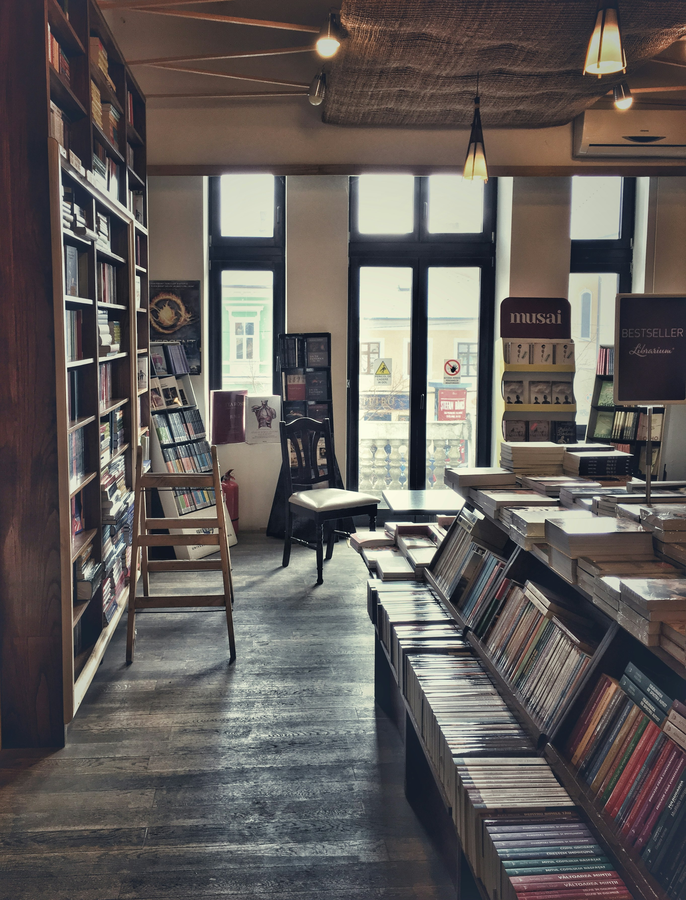

Where I Purchase Books
Everyone has favorite stores they go to for clothes, groceries, and more. The same applies for me when it comes to books, as well. In Trenton, Ga there is a family owned bookstore called Mcbride's. I am not in Trenton much anymore, but when I am I love going in to see what new-to-me books they have. I also enjoy going to 2nd & Charles. 2nd & Charles has more than a surplus of books, they also have figurines (which I have fallen victim to because I collect Kuromi figurines), records, book-themed keychains, bags, and more. Another way I obtain books is through Kindle Unlimited, I just don't own those books and return them once I am done reading them. With Kindle Unlimited, which you don't need a Kindle device for you can just use the app on your phone, it is about $12 a month and you can read as many books as you want that are available on KU.
Links to McBride's, 2nd & Charles, and Kindle
Why These Stores?
I enjoy going to Mcbride's because it is a small, family owned business. I like supporting small businesses when I am able, and the workers are always friendly and helpful. 2nd & Charles is a larger chain-type store, but I enjoy going there because of the options from books to themed keychains for a favorite book. They tend to have books from all the years, and if you are looking for a specific book you can't find in-store, they will most likely have it online. I also enjoy the orginization present in-store. I don't get overwhelmed upon entrance and it is easy to navigate their selection. With Kindle Unlimited, I enjoy it because of the variety of books available on there. Some authors also only publish their books on KU. It is also nice to be able to read a book without having to pay for it individually, especially if you read a lot like I do. I am also running out of space on my current bookshelf, so that is another plus! I do have an actual Kindle device, since it is easier on the eyes than my phone is.
